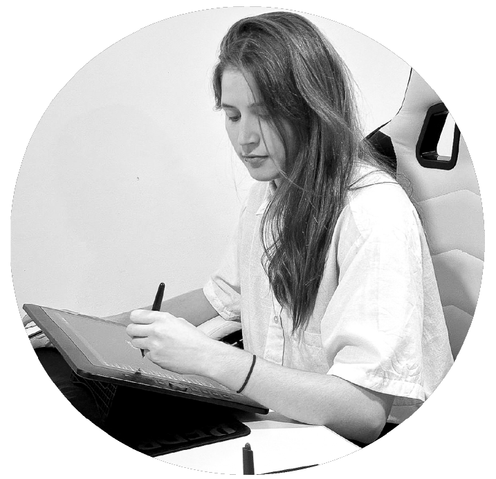
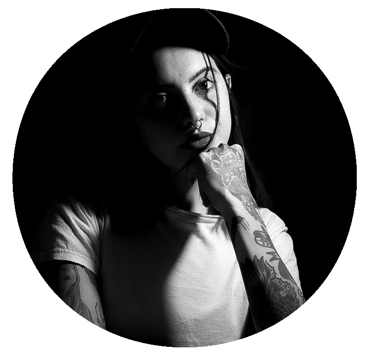

Fotografía digital
Maquinal Club
Registro de cabina en Club Subsuelo, Palermo. Edición II — cobertura nocturna con foco en textura, manos y equipo.
Esto es lo que mejor hacemos
Servicio Integral · Presencia constante · Entrega ordenada ·
Onírica es un estudio multimedial de Buenos Aires. Trabajamos fotografía, video, diseño web y creación de marca para proyectos que necesitan presencia constante y entrega ordenada, sin vueltas ni lenguaje de agencia genérica.
El ojo es nuestra imagen de marca: mirada consciente, atención al detalle, y la idea de que cada producción —sea una foto, un aftermovie o un sitio— se construye pieza por pieza, nunca al azar. Por eso lo representamos acá como el isotipo real de Onírica llevado a un volumen: el mismo trazado exacto del logo, extruido en profundidad real (no una imagen ni una textura) y con cámara ortográfica para que nunca se deforme al rotar.
Detrás del estudio, un equipo chico que prefiere resolver todo el proceso: desde la captura hasta la publicación.
— Arrastrá para rotar la cámara · clic acá o tecla “M” para cambiar de modo —
Logo Onírica — extrusión 3D · P5.js / WEBGL · 2026


Pieza interactiva · P5.js / Drag & Drop · 2026

Diseñadora Multimedial
Diseñadora multimedial en formación, con experiencia en comunicación digital y producción de eventos.

Diseñadora Integral · Creadora Audiovisual
Diseñadora integral y creadora audiovisual. Fotografía y video pensados para mostrar los momentos justos en cada fecha.
Datos de cursada
Diseño Multimedial
Diseño y Programación Web I
2026 · Tercer cuatrimestre
D
Mañana
Omar Toyos
Segundo parcial
Meza Juliana · Arely · Valentino Rugnia